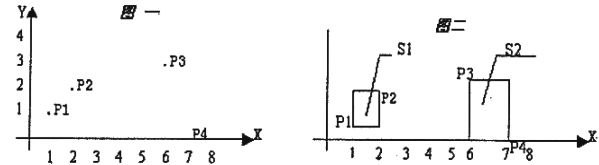

在平面上有 $n$ 个点（$n \le 50$），每个点用一对整数坐标表示。例如：当 $n＝4$ 时，$4$ 个点的坐标分另为：$p_1$（1，1），$p_2$（2，2），$p_3$（3，6），$p_4$（0，7），见图一。

这些点可以用 $k$ 个矩形（$1 \le k \le 4$）全部覆盖，矩形的边平行于坐标轴。当 $k=2$ 时，可用如图二的两个矩形 $s_1，s_2$ 覆盖，$s_1，s_2$ 面积和为 $4$。问题是当 $n$ 个点坐标和 $k$ 给出后，怎样才能使得覆盖所有点的 $k$ 个矩形的面积之和为最小呢。约定：覆盖一个点的矩形面积为 $0$；覆盖平行于坐标轴直线上点的矩形面积也为 $0$。各个矩形必须完全分开（边线与顶点也都不能重合）。
 Comet OJ
Comet OJ